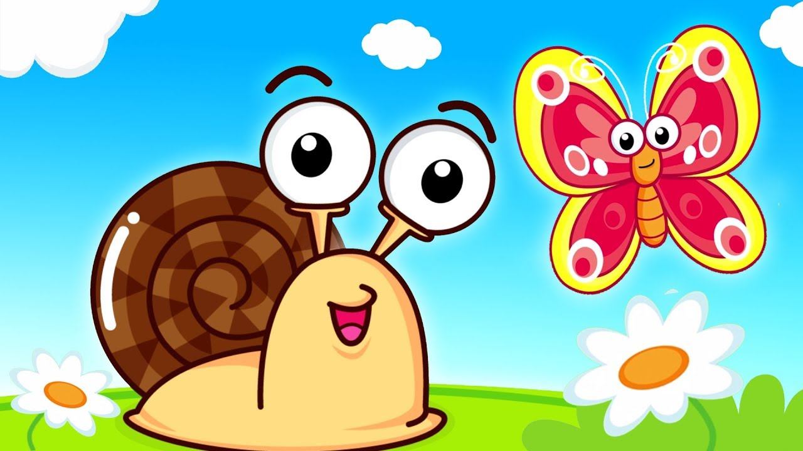

A snail is, in loose terms, a shelled gastropod. The name is most often applied to land snails, terrestrial pulmonate gastropod molluscs. However, the common name snail is also used for most of the members of the molluscan class Gastropoda that have a coiled shell that is large enough for the animal to retract completely into. When the word "snail" is used in this most general sense, it includes not just land snails but also numerous species of sea snails and freshwater snails. Gastropods that naturally lack a shell, or have only an internal shell, are mostly called slugs, and land snails that have only a very small shell (that they cannot retract into) are often called semi-slugs Snails have considerable human relevance, including as food items, as pests, and as vectors of disease, and their shells are used as decorative objects and are incorporated into jewelry.[1] The snail has also had some cultural significance, tending to be associated with lethargy. The snail has also been used as a metaphor: someone who is not moving fast enough is "slow as a snail." The snail is the same or similar shape as the Cochlea.[2]
